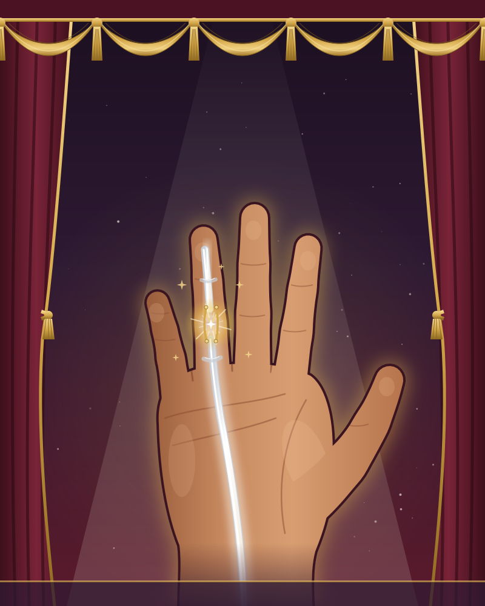
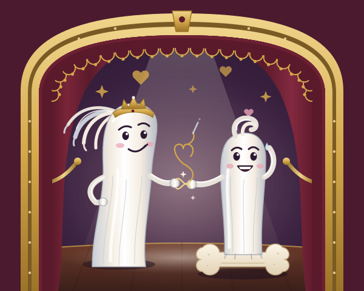
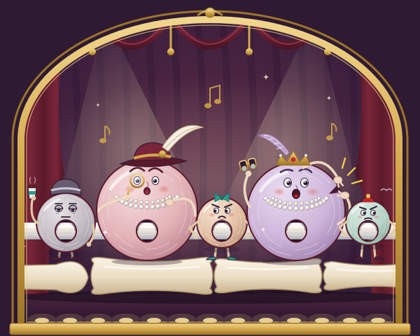

Time & Place
Twelve Weeks in the Left Hand of Doctor Mae


I have said "never the bagel in your palm" to more patients than I can count. I have shown the photographs at Christmas parties. People have left early. So I would like to state, for the record, that this musical is entirely fictional, and that Mae is not me, and that I was holding an avocado.
Nobody writes songs about tendons, which is a shame, because the flexor tendon is the most romantic structure in the body. It is one line from the elbow to the fingertip. It lives in a wet tunnel, held to the bone by five fussy rings. When it is cut, its two halves fly apart. Then a surgeon stitches them back together in forty minutes, and everyone assumes that was the hard part.
It was not the hard part. The hard part is the twelve weeks afterwards, every hour, ten of each, in a splint you're desperate to be out of, under a therapist you can't out-argue. That's when the real drama happens, quietly, at the kitchen kettle.
Thank you for coming. Please switch off your phones. If you are eating a bagel in the interval, there are chopping boards at the bar.
Make a fist for me. Now open. Enjoy the show.
7:45 on a Tuesday in October, inside the left hand of Mae, a hand surgeon and a busy mum. The holding hand is proud of itself. It grips the coffee, the phone, the lunchbox and Wren, and it has helped mend a thousand other hands. Up in his forearm castle, KING PROFUNDUS pulls and the fingers close. Down in the ring finger, PROX (his daughter) and TIP (the fingertip's boy) glide as one long-married tendon, called "Proxantip" by everybody. Above, Mae won't let Wren cut her own bagel. She holds it in her palm herself, and the knife slips. The deep tendon is cut in Zone Two, the stretch the old maps call No Man's Land. The King's recoil drags Prox back into the palm, and Tip slides away towards the end of the finger. Prox stops in the palm, not at the wrist, only because little LUMBO hangs on to her side. DIGBY the nerve has been cut too, and half of him has gone quiet.
That night Prox realises that she and Tip were always two. She refuses her father's "come home" and sets off back through No Man's Land. On Day Two the surgeon DR TEO OKAFOR, whom Mae trained, threads the couple back together while Mae lies awake on the table. THE PULLEYS have spent the night worrying about being vented. Tip haggles the repair up to six strands. One pulley gets a small nick, and the tendon glides. On Day Three THEA, the hand therapist, takes over. She makes a thermoplastic splint and lays down the rules: move early, place and hold, hand up high. To the King she says, "Pull with a whisper, Your Majesty." Then, on Day Ten, Wren trips on the stairs. Mae grabs her with the splinted hand and the King pulls with everything he has. The stitches creak and hold, just. That night the guilty King swears he will never pull again. Tip begs not to be moved. Mae decides to skip her exercises, and from the dark of No Man's Land a velvet voice purrs: hold still.
For weeks three to five Mae tells clinic she is doing the exercises every hour. She isn't. SCARLETT ADHESION, the scar-tissue queen of No Man's Land, moves in with her backing trio THE FIBROBLASTS. She sings Tip to sleep against the tunnel wall, keeps the guilt-frozen King to his vow, and croons up to Mae herself about the cost of a rupture. Tip goes quiet. Meanwhile Digby the nerve sets off on a deadpan road trip back down the finger, a millimetre a day, and Thea tracks his tingle with her taps. Above, Wren cuts her own bagel on the board, and Mae lets her. At six weeks the splint comes off. Thea says "Make a fist for me", and the fingertip won't bend.
By week eight Teo is talking about a second operation. The King finally wants to act, and wants to rip Tip free in one almighty heave. Prox stops him. Not like Day Ten, not like never, but like this: she teaches her father the whisper. Thea's blocking exercises begin and a frightened Tip agrees to be pulled. Something flickers. Five degrees, then ten, then forty. Then it's week twelve, a January morning and the first day of term. The ring slides back over the knuckle, and all three daughters can close. The Pulleys take a bow, Lumbo is finally thanked, and Digby arrives more or less on time. Scarlett has been remodelled, not destroyed, and now faces the right way. At the school gate Mae ties a shoelace and lets go of a small hand. Then she says the final words of the show to her own hand.

PROX (King's daughter, proximal stump) is thrilled to be back in No Man's Land, having last been seen there being dragged into the palm. Credits: Grip (Kettle Rep), Cutlery Drawer (understudy) and a long run in Typing. She can count to ten every hour and does. TIP (fingertip's boy, distal stump) has touched phones, noses and, regrettably, a bagel. Previous work: Pointing, Doorbell, and the closing beat of every fist you've ever made. He has never moved by himself and would prefer that not to come up. The couple have been married since before Mae could crawl and are now never more than three millimetres apart.

His Majesty returns to the stage after a long residency in the Forearm, where he has pulled every finger closed since birth. Credits: Gripping (Lead), The Steering Wheel (twice nightly) and the arm-wrestling scene in Christmas at the In-Laws. He has three daughters on one muscle belly, so when one is held back, nobody closes properly. He dislikes the word "subtle". He is learning the word "whisper". He would like it known that he did not mean to nearly tear anybody on Day Ten, and that he has been practising his library voice.

SCARLETT has haunted the flexor sheath since the days of three weeks in plaster, which she still calls "the golden age". Credits: The Stiff Finger (long run), Rubber Bands of the 1970s (nostalgia tour) and Tenolysis: The Sequel. She is the only one in the kingdom who says "darling". THE FIBROBLASTS (Type Three, Type Three and Type Three) lay collagen every which way, with no plans, no ruler and no straight lines. They clock on whenever the moving stops. By the curtain call Scarlett has had work done and lines up neatly as Type One. Don't look so shocked.

Thea turns theatre plaster into thermoplastic the way other godmothers turn pumpkins into carriages, with a warm water bath and absolutely no sympathy. Credits: Dorsal Blocking Splint (designer), Place and Hold (choreographer) and Ten More, My Love (an ongoing series). Her wand is a goniometer. Nobody has ever been impressed by it. She is the only person Mae cannot out-argue, and she would like the surgeons in the audience to remember that the operation took forty minutes and the next twelve weeks were hers. Hand above your heart, my love. Not your belly button.

DIGBY (ulnar digital nerve) was stitched last in theatre, with thread finer than a hair, and is touring the finger at a millimetre a day, more or less. Credits: Feeling Things (It's a Lot), Pins and Needles (one-man show), and an unfortunate ice-lolly season. He doesn't talk about his cousin, the neuroma. LUMBO (lumbrical) grows straight off Prox's side and is the reason she stopped in the palm and not at the wrist. Credits: Lumbrical Plus (a surprise hit), Paradoxical Extension and Nobody Knows What I Do. Tonight someone finally thanks him. He's not crying. He's a muscle.

AY-TWO and AY-FOUR are grand dowagers and load-bearing, actually. They have held the tendon to the bone for decades and consider bowstringing a public scandal. Joint credits: Not Being Vented, Standards, and Whatever Would the Knuckles Say? Ay-four was vented a sliver on Day Two and has been dining out on it ever since. AY-ONE is cut for trigger finger every Tuesday under local and is past being surprised. AY-THREE and AY-FIVE share one line and would like it noted that nobody mentions them. Nobody mentions them in this bio either.

MAE is a hand surgeon, a mother and a terrible patient. Credits: Never the Bagel in Your Palm (lecture, three hundred performances) and, for one morning only, The Bagel in Her Palm. She wrote the protocol and has been told to do ten more. WREN is small, says very little and gets the bagel in the end, on the board. DR TEO OKAFOR was trained by Mae and returns the favour wide awake with no tourniquet. Credits: The Lightning-Bolt Incision, Four's the Minimum and Mae's Tuesday List (covering). He says "Now open" exactly the way she taught him.

The ring finger of Doctor Mae’s left hand, side view. Zone II, between the start of the tunnel and Big Sister’s anchor, is the No Man’s Land of old Doctor Bunnell’s map, and Scarlett’s favourite haunt.
In order of performance, with notes on what to listen for.
The scene. 7:45 on a Tuesday in October, inside the left hand of Doctor Mae. The kingdom shows off its anatomy, Mae saws a bagel in her palm, and the knife cuts the ring-finger tendon in Zone Two.
Listen for. A ticking-clock hi-hat counts down to the cut. The couple's 'one line from the elbow to the fingertip' hook breaks off mid-word at the knife. Also listen for Mae's catchphrase 'Make a fist for me. Now open', and the fast-rap roll call that names every structure in the finger.
The scene. Day nought, in the dark of the palm. Prox finds she and Tip were always two, refuses her father's 'Come home', and sets off back through No Man's Land, with Lumbo along because he's attached.
Listen for. The 'space between' chorus first appears here. In the patter, every time the King heaves the finger goes straighter, not bent: that's lumbrical plus, a real sign. Also: 'Nearer three centimetres, technically.'
The scene. Day one, in the finger tunnel. The pulley dowagers panic that tomorrow's surgeon will vent them. Tip shows off, then admits he has never moved by himself. A whispered warning introduces Scarlett Adhesion.
Listen for. A mock-operetta patter song. The rule 'Ay-four, or a little of Ay-two, but NEVER both' is real surgical teaching. Ay-one's deadpan Tuesday trigger fingers, and Ay-three and Ay-five sulking that 'Nobody mentions us'.
The scene. Day two, in theatre, with Mae wide awake. Teo threads Prox back down on a borrowed children's-ward tube, finds Tip, and remarries them with a multi-strand repair. A pulley gets a sliver vented, and the tendon glides.
Listen for. The love song is a strand count: one for the kettle, one for the car, one for Wren. Teo's 'Now open', given back to the woman who taught it to him. Digby is stitched last, 'with thread finer than a hair'.
The scene. Day three, in the hand therapy clinic. Thea punctures the post-op glow, moulds a thermoplastic dorsal blocking splint and lays down the rules. The King is told to pull with a whisper.
Listen for. A brassy swing number. Listen for 'Stitched isn't healed', the spelling bee, 'Ooh, Miss! Me, Miss!' (patients holding their hands above their hearts), and 'Tear it, or glue it.' 'A wall at your back, and an open road ahead' is sung once and only once in the show.
The scene. Day ten. The skin stitches come out and the exercises are going beautifully, until Wren trips on the stairs and the King pulls with everything. The repair holds, just. Act One ends with the King's vow, Tip's fear, and a velvet voice in the dark.
Listen for. 'One, and hold. Two, and rest' counts the real exercise rhythm. 'Hold still', what Mae says to Wren every morning in Song 1, comes back as a stranger's lullaby. The act ends on a question: tear, or glue?
The scene. Weeks three to five. Mae fibs at clinic, and Scarlett takes No Man's Land. She seduces Tip, the guilty King and Mae herself (reading her own papers at 3 a.m.), and Tip agrees to stay still 'just for a while'.
Listen for. Electro-swing, with a sliding sub-bass, muted trumpet and finger snaps. The Fibroblasts lay Type Three collagen 'every which way'. Scarlett is nostalgic for 'those darling rubber bands', the old splints that left curled-up stiff fingers. 'There won't be any space between. I'll fill it, darling.'
The scene. Weeks four to six. Digby's deadpan road trip down the finger as the nerve regrows, tracked by Thea's taps. Wren does the bagel on the board. The splint comes off at six weeks, and the fingertip won't bend.
Listen for. A laid-back country-pop shuffle, with the 'tap, tap' of Tinel's sign. Listen for postcards from the middle bone, the cousin who became a neuroma, and the other fingers asking 'Why can't WE close, Father?' (the quadriga effect).
The scene. Week eight. The tendon is stuck, not snapped, and a second operation is being mentioned. The King wants to rip Tip loose. Instead Prox teaches him to pull with a whisper, Tip agrees to be pulled, and the fingertip moves.
Listen for. The eleven-o'clock number. Prox borrows Digby's road-song as her method, and 'Not like Day Ten. Not like never. Like this.' Tip turns the villain's hook: 'Nothing tears if nothing moves, but nothing ever moves.' Five degrees has never sounded so big.
The scene. Week twelve, a January morning and the first day of term. The finger makes a full fist round Wren's hand. Everyone takes a bow, Scarlett has been remodelled, and Mae says goodbye at the school gate.
Listen for. The opening chorus comes back with 'the lunchbox and Wren'. The space-between couplet reaches its final form. Scarlett: 'I've had work done.' 'Hold still... done. Go on.' Then the show's last words, said quietly to one hand.